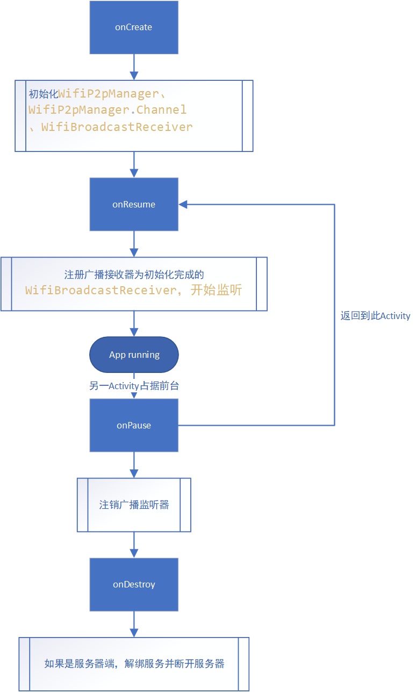

移动互联网开发-WIFI-DIRECT
技术介绍
2010年10月，Wi-Fi Alliance（wi-fi联盟）发布Wi-Fi Direct白皮书，白皮书中介绍了有关于这种技术的基本信息、这种技术的特点和这种技术的功能，
Wi-Fi Direct标准是指允许无线网络中的设备无需通过无线路由器即可相互连接。与蓝牙技术类似，这种标准允许无线设备以点对点形式互连，而且在传输速度与传输距离方面则比蓝牙有大幅提升。
WIFI Direct有什么好处？（特点）
1、无线网络中的设备无需通过无线路由器即可相互连接；
2、支持一对一直连，也可以实现多台设备同时连接；
3、支持所有的Wi-Fi设备，从11a/b/g至11n，不同标准的Wi-Fi设备之间也可以直接互联；
4、移动性与便携性：Wi-Fi Direct设备能够随时随地实现互相连接。由于不需要Wi-Fi路由器或接入点，因此Wi-Fi设备可以在任何地点实现连接。
5、即时可用性：用户将得以利用带回家的第一部Wi-Fi Direct认证设备建立直接连接。例如，一部新购买的Wi-Fi Direct笔记本可以与用户已有的传统Wi-Fi设备创建直接连接。
6、易用性：Wi-Fi Direct设备发现（Device Discovery）与服务发现（Service Discovery）功能帮助用户确定可用的设备与服务，然后建立连接。例如，如果用户想要打印文件，他们可以通过上述服务连接到哪个Wi-Fi网络拥有打印机。
7、简单而安全的连接：Wi-Fi Direct设备采用Wi-Fi Protected Setup™简化了在设备之间创建安全连接的过程。用户可以按下任一设备上的按钮，也可以输入PIN码（即设备显示的PIN码），轻松创建安全连接。
也可以这么理解：Wi-Fi Direct技术是Wi-Fi产业链向蓝牙技术发起的挑战，它试图完全取代蓝牙。
报错与解决
The minCompileSdk (31) specified in a dependency’s AAR metadata (META-INF/com/android/build/gradle/aar-metadata.properties) is greater than this module’s compileSdkVersion (android-30).
Dependency: androidx.appcompat:appcompat:1.6.0-alpha01.
但我看了一眼我依赖用的是
1 | implementation 'androidx.appcompat:appcompat:1.3.0' |
有点不明所以但将编译版本还是改成了
1 | compileSdkVersion 31 |
然后要对所有使用<intent-filter>的activity加android:exported="true"(Manifest里)
应该是
android-31新加的特性
技术要点
原生
这里用了一个很久以前写的练手项目，翻出来的时候只剩源码和注释了。当初开发时借鉴了一个开源项目，因为注释齐全就一直留着，现在来补充一些文档。
主要的技术点
- 广播机制的理解与监听
- 聊天界面的构建（UI问题，easy，不过多分析，做好状态管理就好，尤其是异步）
- service
- 数据传输
逻辑流程

广播机制
在本项目中我们只需要接收广播，或者说，我们更侧重于receiver。
一方面，我们要设置对哪些广播进行监听，或者说，如何对所有广播进行过滤。
另一方面，我们要实现我们的监听后的主体功能，也就是如何重写onReceive。
过滤
过滤器会在注册广播接收器时用到，所以我们将其作为广播接收器类的静态成员即可。
1 | public static IntentFilter getIntentFilter() { |
当然还有其他事件可以监听。
监听
针对我们过滤器的监听内容，我们分别定义各自的处理函数即可。
这里要注意的是，我们需要将获取到的信息通知到WifiP2pManager，那么在广播接收器的类中，我们需要WifiP2pManager对象作为参数，这个对象需要先于WifiBroadcastReceiver完成初始化，在WifiBroadcastReceiver对象销毁后由java垃圾处理机制自行回收。
同时，重写WifiP2pManager.ChannelListener接口，对channel进行监听。
WifiP2pManager对象并没有完全执行操作的能力，相反得，他正是通过在操作（函数）中绑定相应的监听器来达到监听并处理结果的功能。
项目中只用了ChannelListener和ActionListener，还有其他没有使用到的监听器，分别对应不同的功能。通过分监听器的方式完成操作轻量化与解耦。
至于为啥没有重写ActionListener接口，因为这个监听器本身就是用于判断操作返回值，或者说，判断函数是否成功的。
UI要点
聊天界面的图片加载使用的是Glide。界面整体是一个RecyclerView，如果你问为啥不用LIstView，那我只能拿他的性能跟你侃一会儿了，这点《第一行代码》中也有提到，不再赘述。
LayoutInflater
聊天界面的信息都是使用LayoutInflater进行布局加载然后调用对应的Holder进行UI渲染的。
LayoutInflater使用的方法：
LayoutInflater.inflate(@LayoutRes int resource, @Nullable ViewGroup root, boolean attachToRoot)。
可以看到，它总共需要三个参数，分别为：
- resource：布局资源文件，也就是我们将要根据它来创建新的视图。
- root：根布局。可以设置为
Null。如果为Null，那新布局（第一个参数）的根布局参数（注意：是新视图的根布局）就不会被设置成任何布局参数，只有等添加到父布局时候，重新赋给这个根布局新的布局参数，并且第三个参数将毫无作用。我们在第三个参数讲解第二个参数在非Null情况。 - attachToRoot：是否将新的布局添加到根布局（root)，记住这个参数只有在第二个参数非Null的情况才生效。如果此参数为
false，那么新的视图不会被添加进根布局，只会将新的视图根布局的布局参数转换成root的根布局参数。如果此参数为true，那么除了将新的视图根布局的布局参数转换成root的根布局参数，LayoutInflater还会调用root.addView(temp, params)方法，将新的视图添加进根布局。
再深究就涉及到太多安卓View的原理了，故点到为止。但我觉得，基本的视图树的概念还是要有的。
异步与状态管理
service
要细说服务可太有的说了。。。给一份参考吧：我的博客：service
在该程序中，必然存在一台设备担任服务器的角色，那么服务器的功能实现则需要使用服务在后台完成。
程序中的服务主要完成两项任务，首先是启动socket服务器并运行服务线程的代码，其次是运行消息更新的线程代码，即每秒向前台activity发送消息更新的请求，在聊天界面初始化用户身份后，如果是服务端，则绑定一个相关的服务。
数据分发 - 以文件分发为例
每个聊天数据都会被封装成messageBean对象，用于记录数据类型、时间、内容。
所有数据其实都可以作为文件进行分发，尤其是语音。
首先，要约定传输的数据格式：二进制传输，文件类型（int） + 数据长度（二进制长度）+ 二进制数据流。
这里要注意，首先传输的是messageBean的数据，编码方式为GsonUtil.toJsonStr(messageBean).getBytes()，然后传递文件内容，这里使用byte[] buffer = new byte[1024];这样的缓冲字节数组对文件进行读取与传输。
Flutter
Flutter对WiFi直连的实现是来自flutter_p2p_plus: ^1.0.2，本质上其实是通过PlatformChannel对原生函数进行的封装。
相较于原生的整个开发，flutter封装了广播的监听器以及WiFi的事件监听器并预留了接口，并对WiFiP2pManager及其channel进行了封装，简化了整个操作流程。（虽然这给调试带来了一些困难）。
flutter的注册监听事件的逻辑是，向一个List中add你想要监听事件的监听器（与处理函数），调用FlutterP2pPlus.register()通过Platformchannel对原生进行操作（更准确地说，methodChannel)，同样地，程序要在initState时完成注册并addObserver，dispose时解绑所有监听器释放资源并removeObserver，这两个Observer方法是通过当前类继承WidgetsBindingObserver实现的。
当然我也很好奇这个类里面都定义了什么。于是我看了一下这两个方法的源码（时间有限，只能先看这些）。
源码的文档是这样写的：
1 | final List<WidgetsBindingObserver> _observers = <WidgetsBindingObserver>[]; |
可以看到其实这两个函数只是对一个泛型为WidgetsBindingObserver的List进行操作，那么这个类又对这个List做了什么操作呢？
事实上，这个类通过mixin WidgetsBinding on BindingBase, ServicesBinding, SchedulerBinding, GestureBinding, RendererBinding, SemanticsBinding 将List中的widget layer与flutter engine进行连通。
此时就不得不来一张flutter架构图：

Layer作为绘制产物的持有者，主要功能是可以在不同的frame之间复用绘制产物（如果没有发生变化）与划分绘制边界，缩小重绘范围，跟engine有什么关系呢？
如果注意到这一句，你可能会有答案：
1 | which enables other widgets to use the[MediaQuery.of] static method and (implicitly) the [InheritedWidget] mechanism to be notified whenever the screen size changes . |
说白了，状态管理。